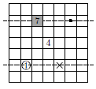

Author: N. Medved
Peter and Victoria are playing on a board measuring 7 × 7. They take turns putting the numbers from 1 to 7 in the board cells so that the same number does not appear in one line nor in one column. Peter goes first. The player who loses is the one who cannot make a move. Who of them can win, no matter how the opponent plays?
We call the arrangement of numbers in the cells of a given board "antisymmetric" if the cells that are symmetric with respect to the central square of the board are either empty or they contain numbers whose sum is 8.
Peter should play like this: the first move put the number 4 in the central cell, and then, after each move Victoria performs an "antisymmetric" arrangement of numbers. That is, if Victoria put a number n in some cell, then Peter should put the number 8 - n in a symmetric cell.
Playing like this, Peter will win. Indeed, the cell which had just been taken symmetrically before each of Peter’s moves will be empty. Let us prove that he can put this number in this cell.
Suppose that this is not the case, that is, Victoria puts a number n in some cell A, and in one of the cells B of the line (row or column) containing the symmetric cell A ', there already is a number 8 - n. Note that B does not coincide with A. Indeed, if these cells coincide, then 8 - n = n, that is, n = 4. On the other hand, symmetric cells A = B and A’ lie on the same line A'B = A 'A. On the same line lies the central square of the board O, therefore, Victoria did not have the right to put 4 in A.
From "antisymmetry" it follows that in the symmetric B cell B’ already stands n. Since cells A and B’ lie on a line symmetric to A'B, Victoria did not have the right to put n in A. This is a contradiction.
(Let's explain this reasoning with a concrete example - see the picture. The circled cell denotes Victoria’s next move, she sets the number 1. Peter wants to put 7 in the cell marked with a dot. Suppose he can not do this because the already painted cell already has the number 7. Then in the cell marked with a cross, already stands 1, that is, Victoria could not make the previous move).

Peter.
1. The lines AB’ and A'B can and coincide (if A lies on one line with O), which does not interfere with our reasoning.
2. Formally, we do not interfere with the coincidence of the cells B and B' with O. But it is not difficult to prove that in fact this cannot happen.